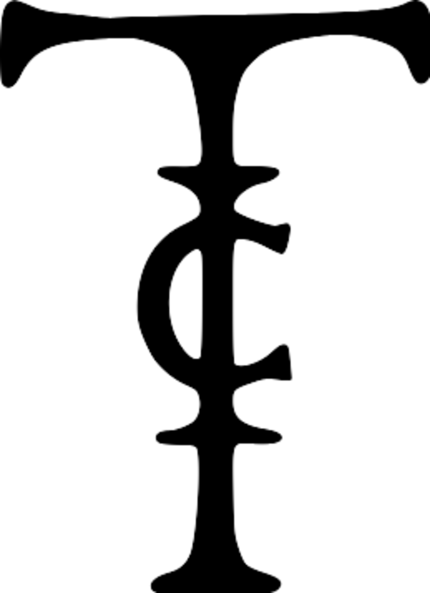

Strategy and brand advisory for museums, cultural institutions and heritage — through the language of art.
Consulenza strategica e di branding per musei, istituzioni culturali e patrimonio — nel linguaggio dell'arte.
Conseil en stratégie et en identité de marque pour musées, institutions culturelles et patrimoine — dans le langage de l'art.
Tiberis Consulting is a boutique strategy and branding advisory for cultural institutions, museums and brands that build distinction through the language of art.
We take on few, selected mandates each year. For each one, we assemble an international team drawn from a network built over fifteen years of work with museums, heritage authorities and academic institutions across three continents.
Our method sits at the intersection of contemporary art, science and cultural heritage. It is grounded in direct relationships with universities, ministries of culture and national museums — and in hands-on experience delivering strategy and rebranding for new museums, historic sites and future UNESCO-listed properties.
Solid roots. A clear vision.
Tiberis Consulting è una boutique di consulenza strategica e branding per musei, istituzioni culturali e brand che costruiscono la propria distinzione nel linguaggio dell'arte.
Seguiamo pochi mandati all'anno, scelti con cura. Per ognuno componiamo una squadra internazionale, frutto di una rete costruita in quindici anni di lavoro con musei, sovrintendenze e istituzioni accademiche su tre continenti.
Il nostro metodo nasce all'incrocio tra arte contemporanea, scienza e patrimonio storico. Si fonda su relazioni dirette con università, ministeri della cultura e musei nazionali — e su un'esperienza concreta nella pianificazione strategica e nel rebranding di nuovi musei, siti storici e futuri siti UNESCO.
Radici solide, visione chiara.
Tiberis Consulting est un cabinet de conseil en stratégie et en identité de marque pour musées, institutions culturelles et marques qui affirment leur singularité par le langage de l'art.
Nous n'acceptons chaque année qu'un nombre restreint de mandats, choisis avec soin. Pour chacun, nous réunissons une équipe internationale, issue d'un réseau tissé en quinze ans auprès de musées, d'autorités du patrimoine et d'institutions académiques sur trois continents.
Notre méthode naît à la croisée de l'art contemporain, de la science et du patrimoine culturel. Elle s'appuie sur des liens directs avec des universités, des ministères de la culture et des musées nationaux — et sur une expérience concrète du développement stratégique et du rebranding de nouveaux musées, de sites historiques et de futurs sites classés UNESCO.
Racines profondes, vision claire.
Contemporary art, science and historical heritage in a single approach — rare, built in the field over fifteen years.
Direct relationships with international institutions — universities, ministries, national museums. Verifiable references, not promises.
Few mandates a year. An international team assembled case by case — never a fixed roster.
Projects that become recognized heritage — museums, UNESCO sites, cultural institutions across three continents.
Arte contemporanea, scienza e patrimonio storico in un solo approccio — raro, maturato sul campo in quindici anni.
Relazioni dirette con istituzioni internazionali: università, ministeri, musei nazionali. Referenze verificabili, non promesse.
Pochi mandati l'anno. Una squadra internazionale composta caso per caso — mai un organico fisso.
Progetti che diventano patrimonio riconosciuto: musei, siti UNESCO, istituzioni culturali su tre continenti.
L'art contemporain, la science et le patrimoine historique réunis dans une seule approche — rare, forgée sur le terrain depuis quinze ans.
Des liens directs avec des institutions internationales : universités, ministères, musées nationaux. Des références vérifiables, pas des promesses.
Peu de mandats chaque année. Une équipe internationale réunie au cas par cas — jamais une structure fixe.
Des projets qui deviennent patrimoine reconnu : musées, sites classés UNESCO, institutions culturelles sur trois continents.
Fifteen years. Three continents. More than €17M in cultural and institutional projects — the experience behind Tiberis Consulting.
Quindici anni. Tre continenti. Oltre 17 milioni di euro in progetti culturali e istituzionali: l'esperienza dietro Tiberis Consulting.
Quinze ans. Trois continents. Plus de 17 M€ de projets culturels et institutionnels — l'expérience derrière Tiberis Consulting.
Selective by design. Available by inquiry.
Selettivi per scelta. Disponibili su richiesta.
Sélectifs par nature. Disponibles sur demande.
Rome, Italy
Roma, Italia
Rome, Italie